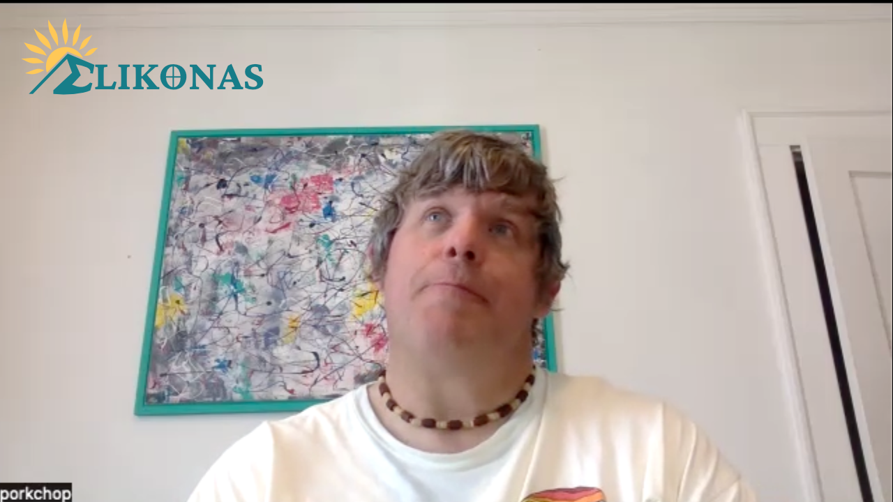
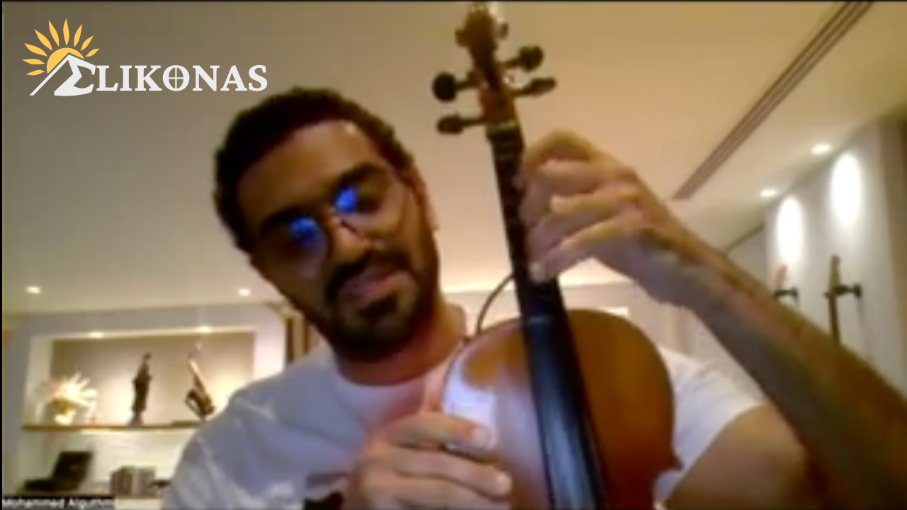
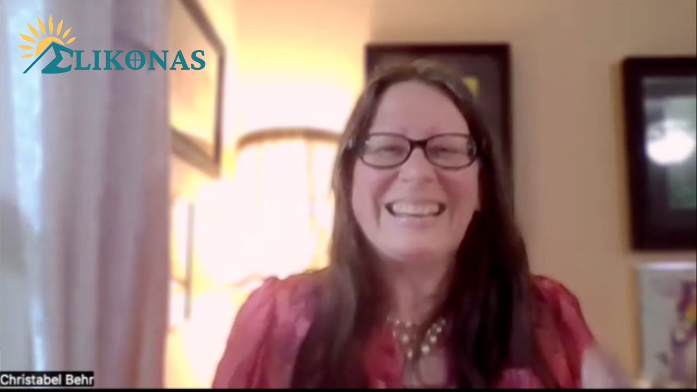
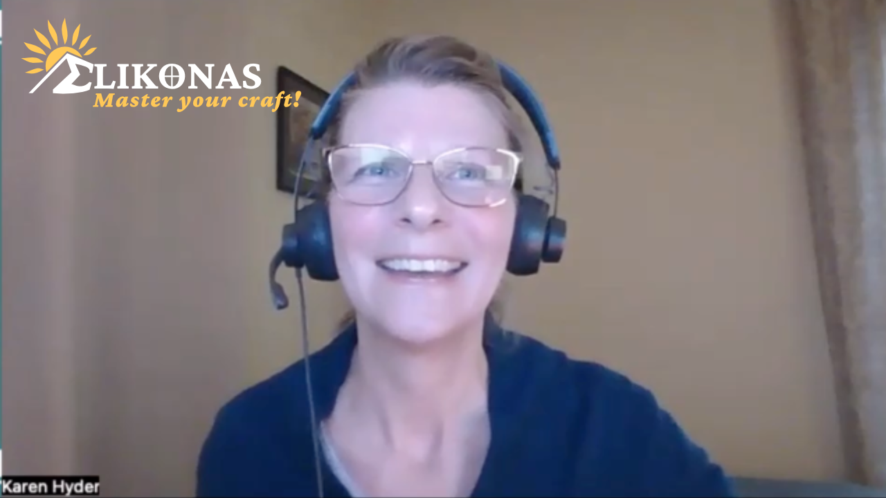
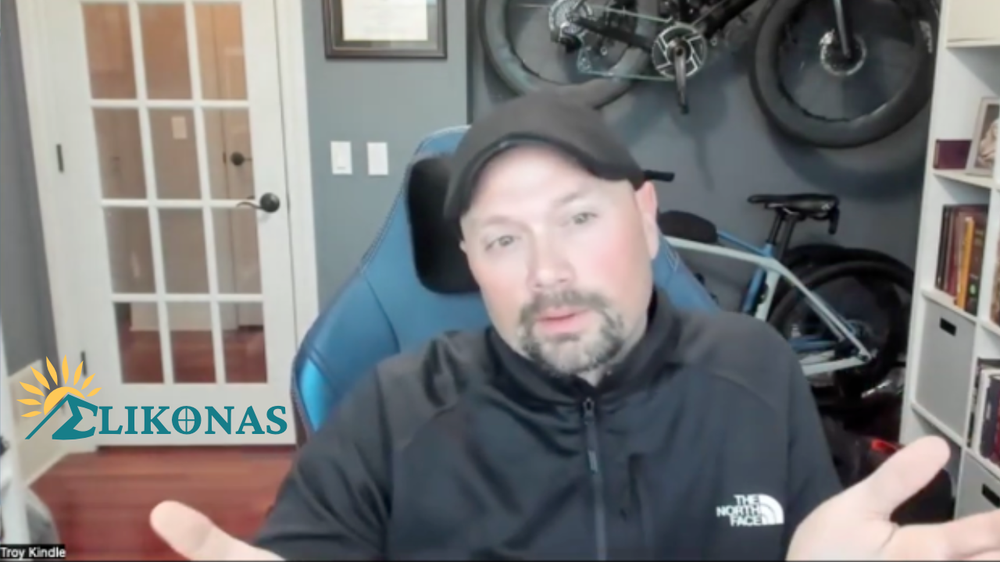

Stories
The stories that people share about their education journeys

A College Story: Kristin Mitchell, No Plan B
Episode 10 recap: Kristin knew at age 5 that she was going to be a dolphin trainer; she had no plans to be anything else. And she fulfilled her dream! After becoming a mother, she's moving on to figure out what to do next.
Read more →
A College Story: Noah Homsley, Never Say No
Episode 9 recap: Noah Homsley — known on air as Porkchop — walked past a student radio station one afternoon in Portland and never really left. Three colleges, zero degrees, and nearly 30 years on the air later, his story is about what happens when you stop saying no.
Read more →
A College Story: Mohammed Alguthmi, The Cellist That Lit the Way
Episode 8 recap: Mohammed Alguthmi grew up in a business family in Riyadh, Saudi Arabia, earned a master's degree in the UK, and built a medical plastics factory. Music was always in the background — a guitar hobby in college, a love of listening. Then came divorce, grief, and a cello. And everything changed.
Read more →
A College Story: Fermina Cotterell, The Mom Who Inspired a Corporate Founder
Episode 7 recap: Fermie didn't go to college. In fact, she got forced out of school in thenth grade, but that didn't stop her from learning...and inspiring others.
Read more →
A College Story: John Edward Ryan, Live for Your Calling
Episode 6 recap: John Edward Ryan didn't go to college. Instead, he went to work and earned an honest living that grew with every new skill or role. He went on to teach people how to live for a calling using an analogy for shop class where you learn how to use the right tools for the right job.
Read more →
A College Story: Christabel Behr, The Plant Lady
Episode 5 recap: Christabel Behr didn’t want college debt, but she wanted a college degree in Botany. What she got was a long road to her dream career — without the degree. She had direction and learned everything she needed to. This is exactly what Elikonas was built for.
Read more →
A College Story: Karen Hyder, From Chronically Unwilling to Guild Master
Episode 4 recap: Karen Hyder shares a career that wound from a Buffalo writing center to teaching Turkish police officers English, from a Monaco rooftop to pioneering virtual learning for the entire eLearning industry — and NONE of that was captured in her degree.
Read more →A College Story: Mark Sheppard — From Architecture Dreams to a Master's in His Field
Episode 3 recap: Mark Sheppard shares his L&D journey that began with architecture school rejections, leading to graphic design and the Army Reserve, and landing wher he is today, at the top of his master's cohort.
Read more →
A College Story: Troy Kindle's Lifelong Learning Journey
Episode 2 recap: Troy Kindle shares how he started college, took a detour after a family tragedy, and eventually went back later in life to finish.
Read more →She Couldn't Always See the Board, But Never Lost Sight of Her Goal
Episode 1 recap: Isara Witten, a visually impaired CS student and AI researcher, shares her non-linear path through higher education.
Read more →
What's Your College Story?
Join us to share your college story! Some went to college. Some didn't. Some have been successful regardless.
Read more →